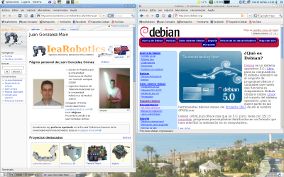

El pasado 14 de Febrero, publicaron la nueva versión estable de Debian: Debian Lenny (v5.0). Aprovechando que las clases ya terminaron, hice un backup de mi portátil y me la instalé. Llevo usando Debian desde el 2001. Y desde que liberaron Sarge, estoy siempre en la versión estable.
Estoy emocionado con Lenny 🙂 Lo que más me gusta es que es muy sencillo realizar live-cds que se pueden grabar en un pen-drive para que arranque el ordenador, sin necesidad de tener que instalar nada. Esto es especialmente útil para dar talleres de robótica. A los asistentes se les entrega un pendrive con el que arrancar su ordenador y ya pueden trabajar.
Lo he probado también en un mini-portátil acer aspire one y funciona muy bien, además de que el arranque es más rápido que cuando se usaban CDs. Es muy útil para hacer pruebas con el FlatBot 😉
A partir de hora todo el software que escriba lo desarrollaré para Debian lenny, y lo empaquetaré tambié para esta distribución. Adiós Etch. ¡Bienvenido Lenny!
Estaría bien tener una de esas live-cds para pen (un torrent), con los programas que utilizas. Más que nada para los que “de linux lo justo” (como yo) podamos tener todo para funcionar.
S2
Ranganok Schahzaman
Hola,
Sí. Ahora sólo estoy haciendo pruebas. Y ya he visto que es viable 😉 Cuando tenga listo el live definitivo para los talleres lo publiaré.